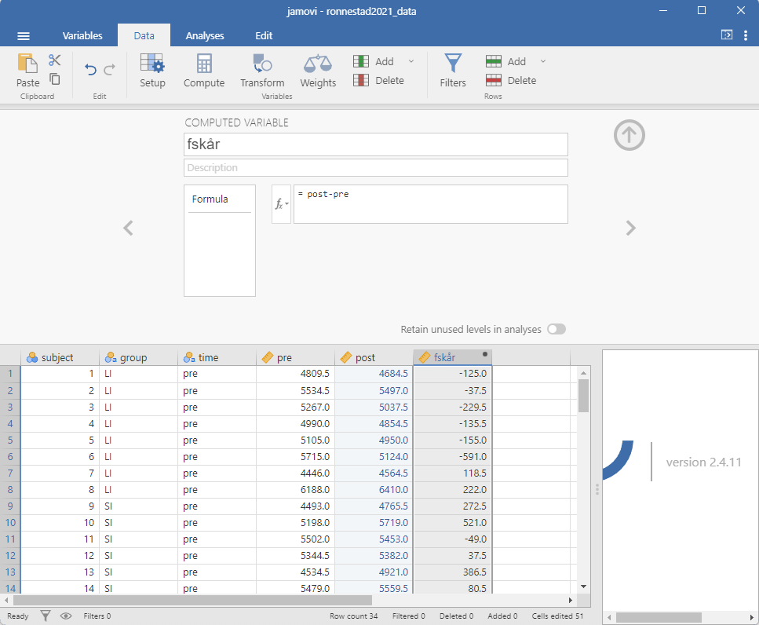

11 Bruk av jamovi i analysearbeidet
Vi kan bruke jamovi til å utføre en rekke statistiske analyser, og vi kan gjøre dette på en til nærmest reproduserbar måte. Dette innebærer at de analyser vi gjennomfører dokumenteres og kan leses og gjentas av noen som får tilgang til dine filer. Dette betyr, som vi allerede har konstatert i tidligere kapittel (1.1), at det analyseprosjekt du arbeider med består av flere filer, inkludert datasett, analysefiler og rapportfiler. Disse bør dokumenteres med en README-fil som beskriver innholdet i de ulike filene sammen med hensikten med prosjektet som en helhet.
I dette kapittelet skal vi se på hvordan vi kan bruke jamovi i en reproduserbar arbeidsflyt. Vi vill bruke et datasett fra Rønnestad et al. (2021), som du finner her ronnestad2021_data.xlsx.
11.1 Importere og validere data og datatyper
Når vi importerer data til jamovi får vi mulighet til å sjekke datatyper og gjøre endringer i datasettet sånn at analysearbeidet vil bli enklere. Som et første steg kan vi gå igjennom variablene i det importerte datasettet og sjekke at de faktisk er av den typen vi forventer. Dette kan vi gjøre ved å klikke på variabelnavnet i fanen Variables. Legg merke til at vi også har mulighet å beskrive variablene her. Dette er en god praksis for å gjøre det enklere for andre og deg selv å forstå datasettet. I dette steg endrer vi også nivåer på kategoriske variabler.
üìπ Forelesning: Beskrive data i jamovi.
Dette er en måte å skape en oversikt over variabler, i et større prosjekt kan det være lurt å i tillegg også lage en README-fil med det samme innholdet. I en slik fil kan vi beskrive dataene enda mer detaljert. I eksemplet under legger jeg for eksempel til en kolonne som indikerer hvilken test dataene kommer fra.
| Variabel | Beskrivelse | Test |
|---|---|---|
subject |
Deltakere (id) | |
group |
Gruppe: SI, “short intervals”; LI, “Long intervals” | |
time |
Tids-punkt for test: pre, i forkant av intervensjon; post, etter intevensjon |
|
body.mass |
Vekt (kg) | |
body.height |
||
age |
Alder () | |
lactate.max |
VO2maks-test | |
peak.HR |
VO2maks-test | |
| … | … | … |
11.2 Data, design og antagelser
I dette eksemplet arbeider vi med et datasett fra (Rønnestad et al. 2021). Hensikten med studien var å se på effekten av to forskjellige typer av økter i en “mikrosyklus” (1 uke trening). Deltakere gjennomførte enten fem økter med korte intervaller (30 sek arbeid, 15 sek hvile), eller fem økter med lange intervaller (5 min arbeid, 2.5 min hvile). La oss kalle dette for behandlingsvariabelen, den variabel som indikerer hvilken behandlingen eller intervensjon deltakerne har fått. I datasettet er det variabelen group som indikerer hvilken behandling deltakerne har fått.
Det å kalle behandlingsvariabelen for gruppe kan være misvisende da vi antar at deltakerne ble tilfeldig inndelt i gruppene etter rekruttering til studien. Denne antagelsen gir oss mulighet å finne ut (eller i hvert fall estimere) hvor stor effekt behandlingen har på utfallsmålene i studien. Hvis vi å andre siden antar at gruppene finnes fra før blir det vanskeligere å si noe om årsakssammenhengen mellom behandlingen og utfallsmålene.
I praksis har dette betydning for hvordan vi tolker resultater fra analysene, men analysene kan i mange tilfeller gjennomføres på samme måte uansett om vi antar at gruppene er tilfeldig inndelt eller ikke. Denne informasjonen bør i et tidlig stadium av analysearbeidet dokumenteres som en del i README-filen. Hvilke antagelser gjør vi om dataene, hvordan dataene ble innhentet og hvordan vi kan tolke resultatene. I dette eksemplet antar vi at gruppene er tilfeldig inndelt.
Før vi ser på dataene bør vi også bestemme oss for den eller de variabler som vi ønsker å studere. I datasettet fra (Rønnestad et al. 2021) finner vi for eksempel VO2maks, maksimal effekt under VO2maks-testen og gjennsomsnittseffekt under en prestasjonstest.
Husk at hensikten med analysen av et utvalg ofte er å si noe om dataene som vi ikke observerer. Hvis vi tar noen grep o forkant av analysen kan vi beskytte oss fra å trekke feil konklusjoner. Vi trekker for eksempel i større grad feil konklusjoner når vi velger å rapportere de statistiske resultater som viser seg å være signifikante. Vi bør altså, før vi ser på dataene, bestemme hvilke variabler som skal analyseres.
11.3 Utføre analyser: To modeller for den samme effekten
Når vi har notert oss antagelser om dataene og studiedesignet, og valgt hvilken variabel vi ønsker å analysere bør vi også velge en måte å analysere dataene på. Vi velger her i praksis en statistisk modell for å estimere det vi er interessert i. I dette eksemplet ønsker vi å estimere effekten av intervensjonen på VO2maks. To mulige modeller for denne analysen er t-test av forandringsskår og ANCOVA.
I studien bel deltakere randomisert (balansert etter absolutt VO2maks (Rønnestad et al. 2021)) til to grupper: LI og SI. I figuren 11.2 ser vi en skisse over datainnhentingen, deltakere (D) gjennomførte tester i forkant (T1) og etterkant (T2) av intervensjonen. Det finnes altså to datapunkter for hver deltaker og vi er interessert i analysere forskjellen i forandring, alternativt post-intervensjonsskår mellom de to intervensjonene (gruppene).
Rønnestad, Bent R., Sjur J. Øfsteng, Fabio Zambolin, Truls Raastad, and Daniel Hammarström. 2021. “Superior Physiological Adaptations After a Microcycle of Short Intervals Versus Long Intervals in Cyclists.” International Journal of Sports Physiology and Performance 16 (10): 1432–38. https://doi.org/10.1123/ijspp.2020-0647.
En t-test av forandringsskår gir oss en modell som også kan kalles for forskjell-i-forskjell (difference-in-difference). I denne modellen beregner vi en forandringsskår for hver deltakere og estimerer forskjellen mellom gruppene i forandringsskåren. Forandrinsgskåren kan beregnes som \(T_2 - T_1\) for hver deltaker.
For å gjøre dette i Jamovi trenger vi å forandre datasettet. Datasettet er oppbygget med en variabel for tid, gruppe og en rekke utfallsmål. For å beregne en forandringsskår må vi transformere datasettet sånn at hver deltaker har en rad som inneholder både pre- og post-intervensjonsdata. Desverre har ikke jamovi funksjoner som gjør dette for oss, vi må kopiere og lime inn dataene på rett plass. Husk å sjekke at deltakerne er i samme rekkefølge i begge tidspunktene. I Figur 11.3 ser vi hvordan datasettet kan se ut etter at vi har forberedt det for en t-test av forandringsskår. Forandringsskåren er beregnet som post - pre for hver deltaker og pre/post variablene er data fra den originale VO2maks variabelen.

Når vi har forberedt dataene kan vi utføre en t-test av forandringsskår i jamovi. Vi har allerede snakket om hvordan vi gjennomfører og tolker denne testen i kapittel 9.1.
En annen måte å analysere dataene på er å bruke en ANCOVA-modell. ANCOVA er en forkortelse for Analysis of Covariance og en variasjon av en regresjonsmodell. I ANCOVA kan vi inkludere en eller flere kontinuerlige variabler som kovariater. I dette eksemplet bruker vi VO2maks ved T1 som en kovariat. Dette gir oss mulighet å sammenligne intervensjonene i den avhengige variabelen (post-intervensjonsskår) når vi setter pre-intervensjonsskåren til en bestemt nivå. På denne måten “kontrollere” vi for forskjeller i utgangsnivået av VO2maks mellom gruppene.
En ANCOVA kan visualiseres som to parallelle regresjonslinjer, en for hver gruppe når vi setter pre-intervensjonsverdier på x-aksel og post-intervensjonsverdier på y-aksel. I Figur 11.4 ser vi en hvordan dette ser ut for VO2maks dataene.
Dataene som vi brukte til t-testen kan også brukes for ANCOVA-analysen. I en ANCOVA med post-verdier som avhengig variabel stille vi spørsmålet: “hvor stor er forskjellen mellom intervensjonenen i post-verdier når vi sammenligner grupper med de samme pre-verdiene?”
Modellen vi bruker kan skrives som
\[\text{post}_i = \beta_0 + \beta_1\times \text{pre}_i + \beta_2\times \text{gruppe}_i\] De parametere som blir estimert i modell gir oss: \(\beta_0\), forventet post-verdi når pre-verdien er 0 og deltakeren er i referanse-gruppen (LI), \(\beta_1\) er endring i post-verdi for hver enhet økning i pre-verdi og \(\beta_2\) er forskjellen i post-verdi mellom gruppene når pre-verdien er 0. Det er \(\beta_2\) som vi er interessert i, denne parameteren gir oss en estimering av effekten av intervensjonen.
I jamovi kan vi bruke modulen for regresjonsanalyse for å utføre en ANCOVA-analyse. Vi legger pre-verdien inn som en kovariat og gruppe som en faktorvariabel (Figur 11.5).
Det finnes i tillegg et alternativ for ANCOVA i ANOVA-modulen i jamovi. I denne model gjennomføres en annen type test av differensen, men resultatene er like.
11.4 Noter og dokumenter
üìπ Forelesning: Annotere analyser i jamovi.
Vi har allerede snakket om viktigheten av å dokumentere dataene og analysene, dette er noe vi gjør i forkant og under analysearbeidet. I jamovi har vi mulighet å legge til notater i analysene. Dette kan være en god måte å innlede arbeidet med rapporten. I forkant av analysene kan vi skrive noe om hva vi ønsker å analysere. Under hvert analyse har vi mulighet å skrive om hva analysene faktisk sier og lage en første utkast på den tekst som skal inn i rapporten.
Et eksempel på en annotert analyse ser vi i Figur 11.6. Her har vi lagt til en forklaring av hva analysen sier og hva vi kan konkludere med. Vi legger til notater ved å klikke på felter i resultatfanen og skrive inn tekst. Teksten kan editeres og formateres ved hjelp av verktøy i Edit-fanen.
üìπ Forelesning: Hvordan eksportere og editere figurer fra jamovi.